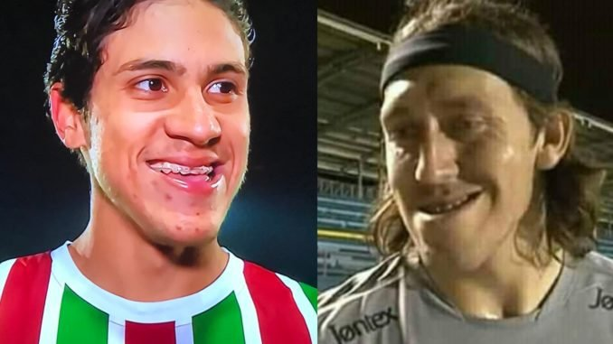

Onze entre dez cientistas elegem café como melhor bebida do mundo
Especialistas afirmam que sua pesquisa não é enviasada e baseada em fatos científicos. Utilizando
técnicas avançadas de medição e coleta de dados, a afirmação fez com que a bebida se tornasse mais
barata nos mercados do mundo devido a alta demanda repentina.

Hacker invade servidor do Tictok e apaga todo o site
Hacker conhecido como ®oqu€ ivadiu servidores da empresa chinesa dona do Tiktok e já é
tratado como herói mundialmente.

Futebolístas disputam final do CQ23
Pedro do Flamengo e Cássio do Corínthians são os dois finalistas do Campeonato Queixada 2023. Essa
final reflete a rivalidade entre as equipes dentro e fora de campo, dividindo a paixão das duas
maiores torcidas do Brasil.